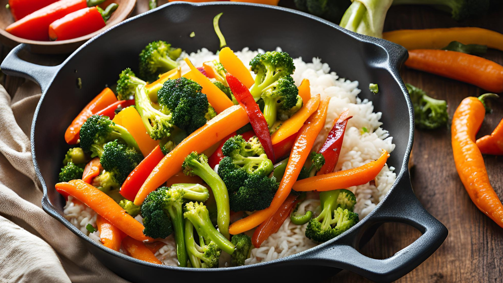

Vegetable Stir-Fry with Rice
Prep time:
15 mins
Yield:
4
Ingredients
2 tablespoons vegetable oil
1 cup broccoli florets
1 cup sliced carrots
1 cup sliced bell peppers
1 small onion, sliced
2 tablespoons soy sauce
1 tablespoon sesame oil
1 teaspoon grated ginger
2 cups cooked rice
Steps
Heat vegetable oil in a large skillet or wok over medium-high heat. Add broccoli, carrots, bell peppers, and onion. Stir-fry for 5-7 minutes.
Add soy sauce, sesame oil, and grated ginger. Cook for another 2 minutes.
Serve hot over cooked rice.